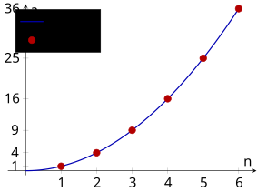
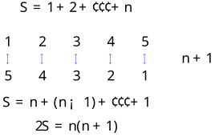

24 数列（I）（Sequences I）
第 19 章把函数视为集合之间的确定性对应。本章将这一视角收窄到定义域为正整数集
的子集的情形：函数值不再连成一条曲线，而是按位置 排列的一列数，这就是数列。本章将学习数列的三种表示方法、递推关系，以及求和记号 与两个核心求和公式。 本章按概念依赖顺序铺排：先建立数列的基本概念（§24.1），掌握通项公式与递推关系；再引入求和记号及其运算性质（§24.2）；最后推导前
个自然数之和与前 个平方数之和，并讨论多项式求和策略（§24.2.2–§24.2.3）。
24.1 数列的基本概念（Basic Concepts of Sequences）
本节难度上限：T B- ｜ C C ｜ E C+ ｜ Q C
本节建立数列的严格定义，厘清数列与函数的关系，掌握通项公式与递推关系两种定义方式。
24.1.1 数列的概念（Concept of Sequences）
设 $D \subseteq \mathbb{Z}^+$。称函数 $$f: D \to \mathbb{R}, n \mapsto f(n)$$ 为一个数列（sequence）。记 $a_n = f(n)$，则 $a_n$ 称为数列的第 $n$ 项（$n$th term），该数列可记作 $\{a_n\}_{n \in D}$；当 $D = \mathbb{Z}^+$ 时，也常写成 $a_1, a_2, a_3, \dots$。若 $f(n)$ 可写成关于 $n$ 的代数表达式，则该表达式称为数列的通项（general term），亦称第 $n$ 项公式。给定 $n$ 后，代入通项即可得到该位置的项的值。
设 $\{a_n\}_{n \in D}$ 为数列。
- 若 $D$ 为有限集（通常写作 $D = \{1,2,\dots,N\}$），则称该数列为有穷数列（finite sequence）；
- 若 $D = \mathbb{Z}^+$，则称该数列为无穷数列（infinite sequence）。

查看 TikZ 原始碼
\usepackage{pgfplots}
\pgfplotsset{compat=1.16}
\begin{document}
\begin{tikzpicture}[scale = 1.5]
\begin{axis}[
width=8cm,
height=6cm,
axis lines=middle,
xlabel={$n$},
ylabel={$a_n$},
xmin=-0.5, xmax=6.5,
ymin=-1, ymax=37,
xtick={1,2,3,4,5,6},
ytick={1,4,9,16,25,36},
domain=0:6,
samples=80,
legend pos=north west
]
\addplot[blue!70!black, thick] {x^2};
\addplot[red!70!black, only marks, mark=*, mark size=2.5pt] coordinates {(1,1) (2,4) (3,9) (4,16) (5,25) (6,36)};
\legend{$y=x^2$,$a_n=n^2$}
\end{axis}
\end{tikzpicture}
\end{document}- 函数定义给出了数列的严格含义：第 $n$ 项 $a_n$ 就是函数 $f$ 在自变量 $n$ 处的函数值。
- 我们也常用“按一定顺序排列的一列数” $a_1, a_2, a_3, \dots$ 来直观表示数列，这种写法强调了各项之间的顺序。
- 数列的图像即为坐标平面上孤立的点 $(1,a_1), (2,a_2), (3,a_3), \dots$，区别于一般函数 $y = f(x)$ 的曲线。这一区别是理解数列的关键：数列只在定义域内的正整数位置上有定义。
图 24-1：函数 $y=x^2$ 的曲线与数列 $a_n=n^2$ 的离散点对比。数列图像只在正整数位置有定义，是一系列孤立点。
数列的三种常用表示法如下：
- 列举法（listing）：依次列出各项，如
- 通项公式（formula for the general term）：给出第
- 递推关系（recurrence relation）：给出初始项以及前后项之间的关系（详见 §24.1.3）。
数列 $2, 4, 6, 8, 10, \dots$ 可如何表示？它是有穷数列还是无穷数列？
该数列可表示为：
- 列举法：$2, 4, 6, 8, 10, \dots$；
- 通项公式：$a_n = 2n$；
- 递推关系：$a_1 = 2,a_{n+1} = a_n + 2$。
由于 “$\dots$” 表示无限延续，它是无穷数列。
24.1.2 数列的通项（General Term of a Sequence）
由 §24.1.1 的函数定义，数列的通项实际上就是函数
的代数表达式。例如，函数 给出的数列 的通项即为 。
例如：
- 函数
- 函数
给定一个通项公式，就唯一确定一个数列。反之，给定有限项，未必能唯一确定通项。
例如，已知前三项 $1, 2, 4$，下一项既可以是 $8$（对应 $a_n = 2^{n-1}$），也可以是 $7$（对应 $a_n = \dfrac{1}{6}(n^3 - 3n^2 + 8n)$）。因此，没有通项公式时，由前几项归纳出的规律只是猜想，不是严谨结论。
此外，并非所有数列都有简单的初等通项公式。例如质数数列 $2, 3, 5, 7, 11, \dots$ 在初等函数意义下没有简单通项。
设数列 $\{a_n\}$ 的通项为 $a_n = n^2 - 2n + 3$。求 $a_1, a_2, a_3$ 与 $a_{10}$。
依次代入：
- $a_1 = 1^2 - 2 \cdot 1 + 3 = 2$；
- $a_2 = 2^2 - 2 \cdot 2 + 3 = 3$；
- $a_3 = 3^2 - 2 \cdot 3 + 3 = 6$；
- $a_{10} = 10^2 - 2 \cdot 10 + 3 = 83$。
因此，该数列前三项为 $2, 3, 6$，第 $10$ 项为 $83$。
已知数列前四项为 $2, 5, 10, 17$，写出一个候选通项，并说明它是否唯一。
观察可得 $$2 = 1^2 + 1, 5 = 2^2 + 1, 10 = 3^2 + 1, 17 = 4^2 + 1,$$ 因此一个候选通项为 $$a_n = n^2 + 1.$$
但它不唯一。例如，若构造 $$a_n = n^2 + 1 + (n-1)(n-2)(n-3)(n-4),$$ 则当 $n = 1,2,3,4$ 时附加项为零，前四项同样为 $2,5,10,17$，但第 $5$ 项已不同于 $n^2+1$。这再次说明有限项不能唯一确定通项。
24.1.3 递推关系（Recurrence Relations）
通项公式直接给出了第
项 的表达式。但在很多问题中，项与项之间的生成关系更为自然。递推关系就是描述这种生成关系的方式：它给出初始项，并告诉如何从已算出的项得到下一项。
给定数列的前若干项（称为初始条件（initial conditions）），并以这些项通过一个关系式来定义后续各项，这种定义数列的方式称为递推关系（recurrence relation），亦称递归关系。
若每一项仅依赖其前一项，称为一阶递推（first-order recurrence），一般形式为
$$a_{n+1} = f(a_n, n), n \ge 1.$$
若每一项依赖其前两项，称为二阶递推（second-order recurrence），一般形式为
$$a_{n+2} = g(a_{n+1}, a_n, n), n \ge 1.$$
本章只涉及至多二阶递推。更高阶递推及系统求解方法留待 Ch36 讨论。
递推关系中的 $f$ 与 $g$ 都是函数。分别为：
$$f:\mathbb R \times \mathbb N \to \mathbb R, (x,n) \longmapsto f(x,n)$$
以及
$$g:\mathbb R^2 \times \mathbb N \to \mathbb R, (x,y,n) \longmapsto g(x,y,n)$$
我们将 $a_n$ 的值作为 $f$ 在 $\mathbb R$ 上的输入，其项数 $n$ 作为 $f$ 在 $\mathbb N$ 上的输入，$f$ 的输出作为 $a_{n+1}$。对 $g$ 也同理。
- 取定具体的 $f$ 或 $g$ 以及初始条件后，即可逐项生成整个数列。
取 $f(x, n) = x + 3$，初始条件 $a_1 = 2$。由 $a_{n+1} = f(a_n, n) = a_n + 3$ 生成的数列是什么？
逐项计算：
- $a_1 = 2$；
- $a_2 = a_1 + 3 = 5$；
- $a_3 = a_2 + 3 = 8$；
- $a_4 = a_3 + 3 = 11$。
因此得到数列 $2, 5, 8, 11, \dots$。
可以猜出，该数列的通项为
。其严格推导将在 Ch36 中讨论。
取 $g(x, y, n) = 2x + y$，初始条件 $a_1 = 1,a_2 = 1$。由 $a_{n+2} = g(a_{n+1}, a_n, n) = 2a_{n+1} + a_n$ 生成的数列是什么？
逐项计算：
- $a_1 = 1$；
- $a_2 = 1$；
- $a_3 = 2a_2 + a_1 = 3$；
- $a_4 = 2a_3 + a_2 = 7$；
- $a_5 = 2a_4 + a_3 = 17$。
因此得到数列 $1, 1, 3, 7, 17, \dots$。
取 $f(x, n) = x + n$，初始条件 $a_1 = 1$。由 $a_{n+1} = f(a_n, n) = a_n + n$ 生成的数列是什么？
逐项计算：
- $a_1 = 1$；
- $a_2 = a_1 + 1 = 2$；
- $a_3 = a_2 + 2 = 4$；
- $a_4 = a_3 + 3 = 7$。
因此得到数列 $1, 2, 4, 7, \dots$。这里 $f$ 的第二个变量 $n$ 直接参与生成，不可忽略。
上面三个例子展示了如何取定具体的
或 来构造数列。下面给出由任意递推关系生成前若干项的通用算法。
设给定递推关系与初始条件，生成前若干项的步骤如下：
- 写出初始项（一阶递推写 $a_1$；二阶递推写 $a_1, a_2$）。
- 将 $n=1$ 代入递推关系，求出下一项。
- 依次令 $n = 2, 3, \dots$，重复步骤 2，直至得到所需项。
设 $a_1 = 3$，且 $a_{n+1} = a_n + 2$。求该数列的前 $5$ 项。
按递推关系逐项计算：
- $a_1 = 3$；
- $a_2 = a_1 + 2 = 5$；
- $a_3 = a_2 + 2 = 7$；
- $a_4 = a_3 + 2 = 9$；
- $a_5 = a_4 + 2 = 11$。
因此前 $5$ 项为 $3, 5, 7, 9, 11$。
设 $a_1 = 1,a_2 = 1$，且 $a_{n+2} = a_{n+1} + a_n$。求该数列的前 $8$ 项。
逐项计算：
- $a_1 = 1$；
- $a_2 = 1$；
- $a_3 = a_2 + a_1 = 2$；
- $a_4 = a_3 + a_2 = 3$；
- $a_5 = a_4 + a_3 = 5$；
- $a_6 = a_5 + a_4 = 8$；
- $a_7 = a_6 + a_5 = 13$；
- $a_8 = a_7 + a_6 = 21$。
因此前 $8$ 项为 $1, 1, 2, 3, 5, 8, 13, 21$。这一数列称为斐波那契数列（Fibonacci sequence），其通项公式将在 Ch36 中讨论。
| 比较维度 | 递推关系 | 通项公式 |
|---|---|---|
| 求第 $n$ 项 | 须由初始项逐一计算 | 直接代入 $n$ |
| 给定方式 | 初始条件 + 运算规则 | 一个以 $n$ 为变量的代数式 |
| 优势 | 体现项间的生成关系 | 便于求任意项或分析趋势 |
同一数列往往可同时用两种方式定义。例如 $a_1 = 3,a_{n+1} = a_n + 2$ 与 $a_n = 2n + 1$ 描述的是同一个数列。
24.2 数列的求和（Summation of Sequences）
本节难度上限：T B- ｜ C B- ｜ E C+ ｜ Q C+
本节引入求和记号
，建立其基本运算性质，并推导两个核心求和公式。
24.2.1 求和记号（Sigma Notation）
对数列 $\{a_k\}$，记号 $\displaystyle\sum_{k=m}^{n} a_k$（读作“sigma $a_k$，$k$ 从 $m$ 到 $n$”）表示从第 $m$ 项加到第 $n$ 项的总和： $$\sum_{k=m}^{n} a_k = a_m + a_{m+1} + \cdots + a_n.$$ 其中 $k$ 称为求和指标（index of summation），亦称哑指标（dummy index），可任意更换字母而不改变结果。
- 当 $m = n$ 时，$\displaystyle\sum_{k=m}^{m} a_k = a_m$。
- 当 $m > n$ 时，约定空和（empty sum）为 $0$，即 $\displaystyle\sum_{k=m}^{n} a_k = 0$。
- 求和指标的名称不影响结果：$\displaystyle\sum_{k=1}^{n} a_k = \sum_{i=1}^{n} a_i = \sum_{j=1}^{n} a_j$。
设 $\{a_k\}$ 与 $\{b_k\}$ 为数列，$c$ 为常数，则对任意整数 $m \le n$：
- $\displaystyle\sum_{k=m}^{n}(a_k + b_k) = \sum_{k=m}^{n} a_k + \sum_{k=m}^{n} b_k$；
- $\displaystyle\sum_{k=m}^{n} ca_k = c\sum_{k=m}^{n} a_k$。
只证 (1)；(2) 同理。将左端展开： $$\sum_{k=m}^{n}(a_k + b_k) = (a_m + b_m) + (a_{m+1} + b_{m+1}) + \cdots + (a_n + b_n).$$ 利用加法交换律与结合律重新分组，得 $$(a_m + a_{m+1} + \cdots + a_n) + (b_m + b_{m+1} + \cdots + b_n) = \sum_{k=m}^{n} a_k + \sum_{k=m}^{n} b_k.$$
将 $\displaystyle\sum_{k=1}^{n}(2k^2 + 3k)$ 拆成只含基本求和的形式。
由线性性质， $$\sum_{k=1}^{n}(2k^2 + 3k) = 2\sum_{k=1}^{n} k^2 + 3\sum_{k=1}^{n} k.$$
后续可用 §24.2.2 与 §24.2.3 的核心公式继续计算。
设 $c$ 为常数，则对任意正整数 $n$， $$\sum_{k=1}^{n} c \equiv nc.$$
将常数 $c$ 看作常值函数 $f(k) = c$。按定义， $$\sum_{k=1}^{n} c = \underbrace{c + c + \cdots + c}_{n \text{ 项}} = nc.$$
展开下列求和式，并验证 $\displaystyle\sum_{k=1}^{4} k^2$ 与 $\displaystyle\sum_{i=1}^{4} i^2$ 相等。
- $\displaystyle\sum_{k=1}^{4} k^2$
- $\displaystyle\sum_{i=1}^{4} i^2$
- $\displaystyle\sum_{k=1}^{4} k^2 = 1^2 + 2^2 + 3^2 + 4^2 = 1 + 4 + 9 + 16 = 30$。
- $\displaystyle\sum_{i=1}^{4} i^2 = 1^2 + 2^2 + 3^2 + 4^2 = 30$。
两式结果相同，说明哑指标的名称不影响求和结果。
计算 $\displaystyle\sum_{k=3}^{2} k$。
由于下限 $3$ 大于上限 $2$，这是空和，按约定 $$\sum_{k=3}^{2} k = 0.$$
24.2.2 数列求和问题初步（Basic Summation Problems）
对任意正整数 $n$， $$\sum_{k=1}^{n} k \equiv 1+2+3+ \cdots + (n-1) + n \equiv \frac{n(n+1)}{2}$$
设 $$S = 1 + 2 + \cdots + n.$$ 倒序写出 $$S = n + (n-1) + \cdots + 1.$$ 两式逐项相加，得 $$2S = \underbrace{(1+n) + (2+n-1) + \cdots + (n+1)}_{n \text{ 对，每对和均为 } n+1} = n(n+1).$$ 故 $$S = \frac{n(n+1)}{2}.$$

查看 TikZ 原始碼
\begin{document}
\begin{tikzpicture}[scale=1.5, every node/.style={font=\fontsize{16}{18}\selectfont}]
% Top row: 1,2,3,4,5
\foreach \x/\val in {1/1,2/2,3/3,4/4,5/5} {
\node at (\x,1) {$\val$};
}
% Bottom row: 5,4,3,2,1
\foreach \x/\val in {1/5,2/4,3/3,4/2,5/1} {
\node at (\x,0) {$\val$};
}
% Pairing arrows
\foreach \x in {1,...,5} {
\draw[<->, blue!70!black] (\x,0.65) -- (\x,0.35);
}
\node[right] at (6,0.5) {$n+1$};
\node at (3,2) {$S = 1+2+\cdots+n$};
\node at (3,-0.8) {$S = n+(n-1)+\cdots+1$};
\node at (3,-1.5) {$2S = n(n+1)$};
\end{tikzpicture}
\end{document}图 24-2：高斯配对法直观。将
与其倒序相加，每一列的和均为 ，共 列，因此 。
对任意 $1 \le m \le n$, $$\sum_{k=m}^{n} k = \sum_{k=1}^{n} k - \sum_{k=1}^{m-1} k = \frac{n(n+1)}{2} - \frac{(m-1)m}{2}.$$
证明留作练习。
求 $1 + 2 + \cdots + 100$。
由定理， $$1 + 2 + \cdots + 100 = \sum_{k=1}^{100} k = \frac{100 \times 101}{2} = 5050.$$
求 $20 + 21 + \cdots + 50$。
由分段求和推论， $$\sum_{k=20}^{50} k = \sum_{k=1}^{50} k - \sum_{k=1}^{19} k = \frac{50 \times 51}{2} - \frac{19 \times 20}{2} = 1275 - 190 = 1085.$$
证明：$\displaystyle\sum_{k=1}^{n}(3k + 2) = \frac{3n(n+1)}{2} + 2n$
由线性性质， $$\sum_{k=1}^{n}(3k + 2) = 3\sum_{k=1}^{n} k + \sum_{k=1}^{n} 2.$$ 由常数求和定理，$\sum_{k=1}^{n} 2 = 2n$；由自然数求和定理，$\sum_{k=1}^{n} k = \frac{n(n+1)}{2}$。代入得 $$\sum_{k=1}^{n}(3k + 2) = 3 \cdot \frac{n(n+1)}{2} + 2n = \frac{3n(n+1)}{2} + 2n.$$
24.2.3 平方和问题（Sum of Squares）
设 $\{b_k\}$ 为数列，则 $$\sum_{k=1}^{n}(b_{k+1} - b_k) = b_{n+1} - b_1.$$
将左端展开： $$\sum_{k=1}^{n}(b_{k+1} - b_k) = (b_2 - b_1) + (b_3 - b_2) + \cdots + (b_{n+1} - b_n).$$ 中间各项 $-b_k$ 与 $+b_k$ 相互抵消，仅余首尾两项，故 $$\sum_{k=1}^{n}(b_{k+1} - b_k) = b_{n+1} - b_1.$$
对任意正整数 $n$， $$\sum_{k=1}^{n} k^2 \equiv \frac{n(n+1)(2n+1)}{6}.$$
对任意正整数 $k$，有 $$(k+1)^3 - k^3 = 3k^2 + 3k + 1.$$ 令 $k = 1, 2, \dots, n$，并将这些等式相加，得 $$\sum_{k=1}^{n}\bigl((k+1)^3 - k^3\bigr) = 3\sum_{k=1}^{n}k^2 + 3\sum_{k=1}^{n}k + \sum_{k=1}^{n}1.$$ 取 $b_k = k^3$，由叠加和引理，左端为 $$\sum_{k=1}^{n}(b_{k+1} - b_k) = b_{n+1} - b_1 = (n+1)^3 - 1^3 = (n+1)^3 - 1.$$ 又 $\sum_{k=1}^{n}k = \frac{n(n+1)}{2}$ 且 $\sum_{k=1}^{n}1 = n$，代入得 $$(n+1)^3 - 1 = 3\sum_{k=1}^{n}k^2 + \frac{3n(n+1)}{2} + n.$$ 展开左端：$n^3 + 3n^2 + 3n$。移项整理： $$3\sum_{k=1}^{n}k^2 = n^3 + 3n^2 + 3n - \frac{3n(n+1)}{2} - n = n^3 + 3n^2 + 2n - \frac{3n(n+1)}{2}.$$ 提取 $n(n+1)$： $$3\sum_{k=1}^{n}k^2 = n(n+1)\left(n + 2 - \frac{3}{2}\right) = n(n+1)\left(n + \frac{1}{2}\right) = \frac{n(n+1)(2n+1)}{2}.$$ 两边除以 $3$，即得 $$\sum_{k=1}^{n}k^2 = \frac{n(n+1)(2n+1)}{6}.$$
对任意常数 $a, b, c$, $$\sum_{k=1}^{n}(ak^2 + bk + c) = a\sum_{k=1}^{n}k^2 + b\sum_{k=1}^{n}k + c\sum_{k=1}^{n}1.$$
该命题的正确性是显然的。
求 $1^2 + 2^2 + \cdots + 10^2$。
由定理， $$\sum_{k=1}^{10} k^2 = \frac{10 \times 11 \times 21}{6} = \frac{2310}{6} = 385.$$
求 $\displaystyle\sum_{k=1}^{n}(2k^2 + 3k - 1)$ 的化简结果。
由线性性质及三个核心公式， $$\sum_{k=1}^{n}(2k^2 + 3k - 1) = 2\sum_{k=1}^{n}k^2 + 3\sum_{k=1}^{n}k - \sum_{k=1}^{n}1.$$ 代入 $\sum k^2 = \frac{n(n+1)(2n+1)}{6}$，$\sum k = \frac{n(n+1)}{2}$，$\sum 1 = n$，得 $$2\cdot\frac{n(n+1)(2n+1)}{6} + 3\cdot\frac{n(n+1)}{2} - n = \frac{n(n+1)(2n+1)}{3} + \frac{3n(n+1)}{2} - n.$$ 提取公因式 $\frac{n}{6}$ 并化简： $$= \frac{n}{6}\bigl[2(n+1)(2n+1) + 9(n+1) - 6\bigr] = \frac{n}{6}(4n^2 + 15n + 5).$$
求 $3^2 + 4^2 + \cdots + 8^2$。
由分段思想， $$\sum_{k=3}^{8} k^2 = \sum_{k=1}^{8} k^2 - \sum_{k=1}^{2} k^2 = \frac{8 \times 9 \times 17}{6} - \frac{2 \times 3 \times 5}{6} = 204 - 5 = 199.$$
24.3 小结（Summary）
- 数列是定义域为
- 数列可用列举法、通项公式或递推关系表示。
- 通项公式唯一确定数列，但有限项不能唯一确定通项。
- 递推关系由初始条件与运算规则定义；本章处理至多二阶递推。
- 求和记号
- 求和指标是哑指标，可任意更换。
- 求和具有线性性质：
- 常数求和：
- 自然数求和：
- 平方数求和：
- 二次多项式求和可分解为上述三个基本求和的线性组合。
词汇表 | Vocabulary
| 中文 | 英文 |
|---|---|
| 数列 | sequence |
| 项 | term |
| 第 |
|
| 有穷数列 | finite sequence |
| 无穷数列 | infinite sequence |
| 通项 | general term |
| 列举法 | listing |
| 递推关系 | recurrence relation |
| 初始条件 | initial conditions |
| 一阶递推 | first-order recurrence |
| 二阶递推 | second-order recurrence |
| 斐波那契数列 | Fibonacci sequence |
| 求和记号 | summation notation |
| 求和指标 | index of summation |
| 哑指标 | dummy index |
| 空和 | empty sum |
| 线性性质 | linearity |
| 常数求和 | sum of a constant |
| 自然数之和 | sum of natural numbers |
| 平方数之和 | sum of squares |
| 叠加法 | telescoping |
反向链接
正在加载反向链接…
本文引用
正在加载…